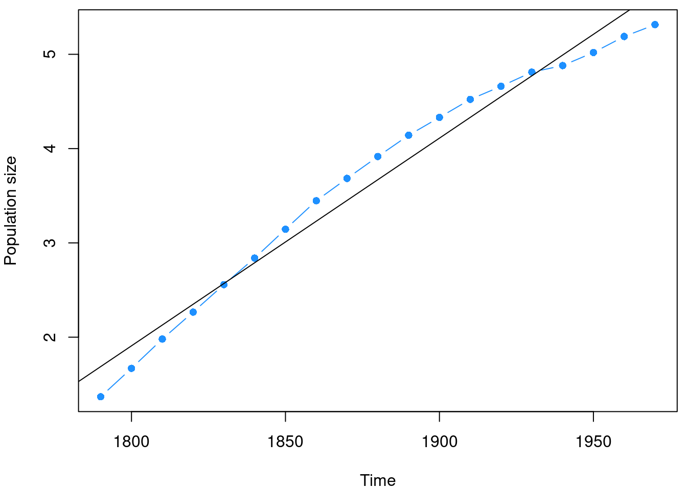
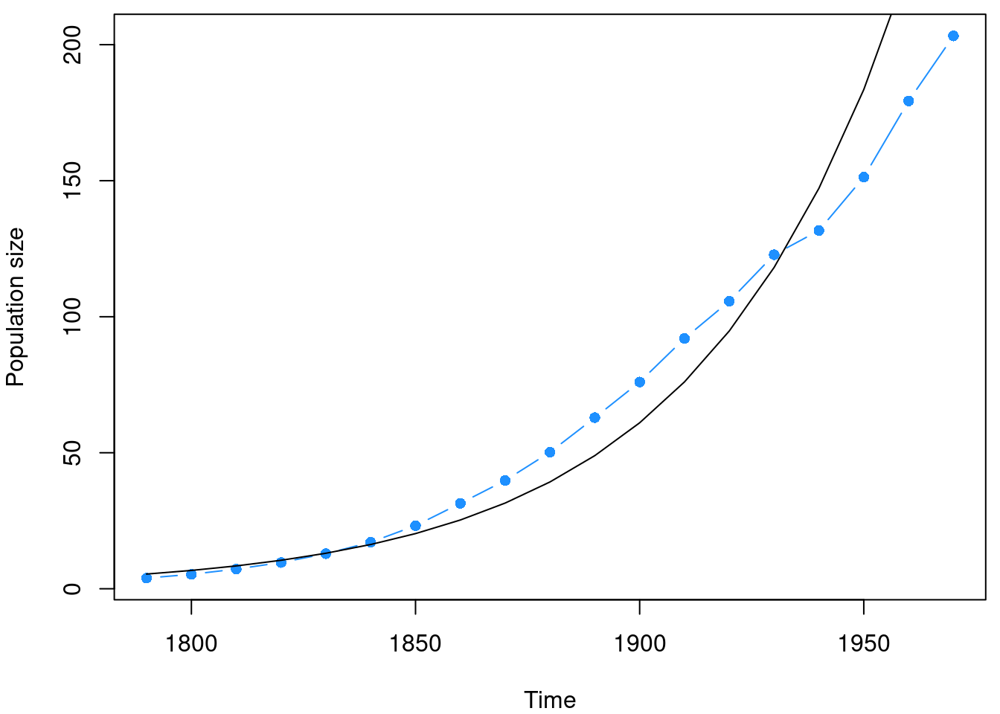
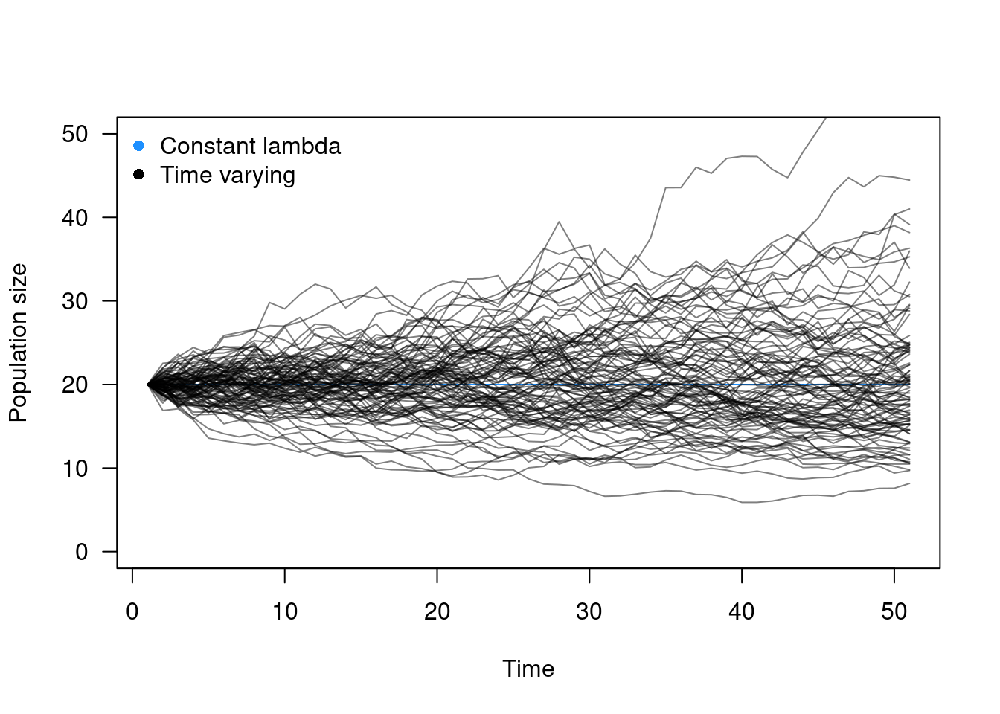
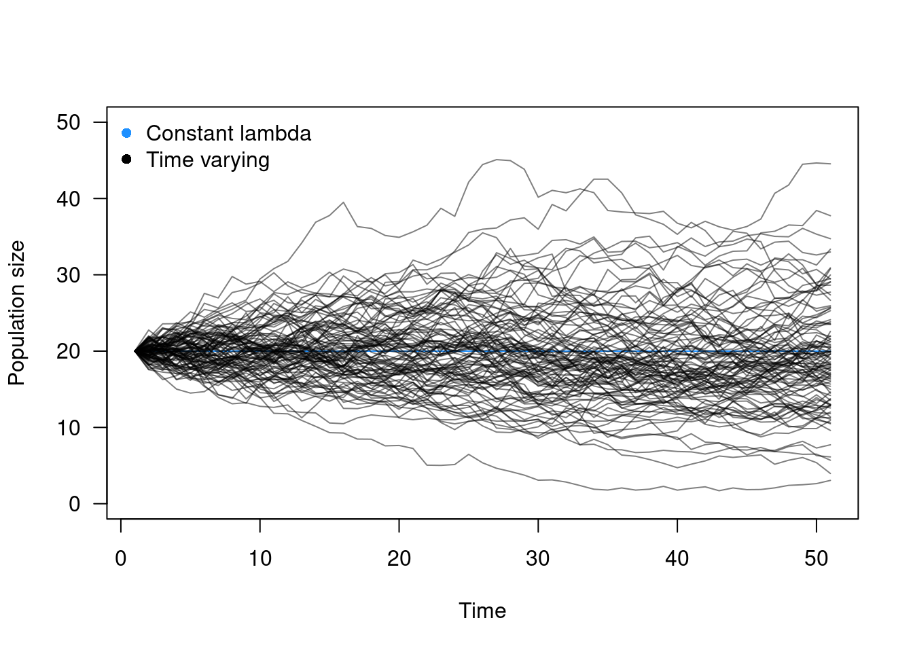

What controls the dynamics of species populations through time?
An essential question in population ecology, with clear fundamental and applied aspects. For instance, fundamentally, understanding what causes populations to fluctuate over time and across environmental gradients underlies much of population ecology. In an applied sense, the ability to forecast population dynamics and estimate population growth rates is essential to the management and conservation of species (e.g., think of fisheries).
We will start from absolute baseline assumptions about the ecology of populations, and eventually build up to incorporate a bit more realism. However, it is important to note that we will not include everything into these models, and the goal of this exercise is not to recapitulate the complexity of a natural system into a model. If we were to try to do this, we would maybe have a really well performing model for a single species in a single location. This course is about generalizing and linking natural systems to underlying theory.
A generalized model of population dynamics
\[\begin{equation} N_{t+1} = N_{t} + Births + Immigration - Deaths - Emigration \end{equation}\]
In the case of a closed population (no movement of individuals into or out of the patch), this reduces to
\[\begin{equation} N_{t+1} = N_{t} + Births - Deaths \end{equation}\]
This is to say, that populations change in terms of the numbers of individuals as a function of two things; birth and death. This is a discrete time model, as each timestep \(t\) is assumed to be on the generational time of the population of interest. Below, we will go into two of the simplest population dynamic models, but at least one which gives some interesting insight that is a bit unexpected. In doing so, we will introduce several terms, which I will try to put in bold.
Exponential growth
Discrete model
The simplest model of population dynamics is based on an exponential increase in population size given a positive growth rate. That is, the population at the next time point (\(N_{t+1}\)) is based on the population size at the current time (\(N_t\)) times the growth rate of the population (\(\lambda\)).
\[\begin{equation} N_{t+1} = \lambda * N_t \end{equation}\]
Here, \(\lambda\) is essentially \(R+1\), where \(R\) refers to the net per capita rate of growth. Why is this?
Because at each time step, we must consider the individuals that are still in the population \(N_t\) and those individuals do not die (or they might?), but instead give birth at some per capita rate \(R\). This means that the equation initially looks like:
\[\begin{equation} N_{t+1} = N_t + (R*N_t) \end{equation}\]
We then let \(\lambda = 1+R\) to reduce the equation. A nice feature of the exponential model is that it can be used to forecast population size after any number of generations. By example, let’s say we have an initial population size of 50 individuals at time \(t\). What is the population size after 3 generations when \(\lambda\) = 1.25
\[\begin{equation} N_{t+1} = \lambda * N_t = 1.25 * 50 = 62.5 \\ N_{t+2} = \lambda * N_t+1 = 1.25 * 62.25 = 78.125\\ N_{t+3} = \lambda * N_t+2 = 1.25 * 78.125 = 97.66 \\ \end{equation}\]
Or another way to look at it: \[\begin{equation} N_{t+1} = \lambda * N_t \\ N_{t+2} = \lambda * \lambda * N_t \\ N_{t+3} = \lambda * \lambda * \lambda * N_t \\ = 1.25*1.25*1.25*50 = 97.66 \\ or \\ N_{t+T} = \lambda^{T} * N_t \\ \end{equation}\]
Continuous model
A discrete model makes sense when this assumption matches the species biology. That is, if the species reproduces once per year, or if generation time can be bounded within some time window, then a discrete model might capture the relevant dynamics well. Let’s consider a system where we want that time window to be incredibly small.
\[\begin{equation} \frac{dN}{dt} = rN \end{equation}\]
where \(r\) is equal to \(b\) - \(d\) (), where \(b\) and \(d\) are per capita measures (births or deaths per individual per unit time). This \(r\) is the . When \(r < 0\), the population decreases towards 0. When \(r > 0\) the population increases exponentially (essentially geometrically, but in continuous time). This equation can be simplified back to discrete time (see Box 1.1 from the Case text), and we see the population size at time \(t\) (\(N_t\)) is
\[\begin{equation} N_{t} = N(0)e^{rt} \end{equation}\]
Where \(N(0)\) is the initial population size, \(r\) is the instantaneous rate of increase, and \(t\) is the number of timesteps. This looks quite similar to the discrete time case, except the growth rate is slightly different. This can also be used to project the expected population growth over time, where \(t\) can be any number greater than 1.
\[\begin{equation} r = ln(\lambda) \end{equation}\]
For more information on this relationship, particularly the relationship between \(R\) and \(r\), see page 9 of the Case text. Importantly, \(R\) is often referred to as ‘annual yield’ while \(r\) is a rate, often referred to as ‘annual rate’. Play with the continuous and discrete time models to explore how \(\lambda\), \(r\), and \(R\) are related.
\(\lambda <\) 1, \(r <\) 0: population decrease to 0
\(\lambda =\) 1, \(r =\) 0: population unchanging
\(\lambda >\) 1, \(r >\) 0: population increase to infinity
Equilibria
\(N = 0, r > 0\) (unstable)
\(N = 0 , r < 0\) (stable)
Assumptions of the exponential model:
- No immigration or emigration
- Constant \(r\) (b-d)
- No age, size, or genetic structure (all individuals are functionally equivalent)
The issue with this model is that there is nothing to stop it, so the time series of the population size quickly becomes exponential (as we’ll see in the coding demonstration).
Let’s explore population growth using population size in the US (as also done in the Case text). Here, we will use \(R\), which we have previously introduced. We will use a dataset that comes with the base installation on US population size from 1790 to 1970.
data(uspop)
par(mar=c(4,4,0.5,0.5))
plot(uspop, type='b', pch=16, col='dodgerblue',
ylab='Population size')
These data consist of 19 evenly-spaced time points based on US census data. In the plot, we might look at this and characterize it as exponential growth. Let’s explore that assumption. To do so, we will visualize the data again, but this time in log space, as the slope of the line in natural log space allows us to estimate the rate of population increase (\(r\)).
data(uspop)
par(mar=c(4,4,0.5,0.5))
plot(log(uspop), type='b', pch=16, col='dodgerblue',
ylab='Population size')
mod <- lm(log(uspop) ~ time(uspop))
abline(mod)
summary(mod)##
## Call:
## lm(formula = log(uspop) ~ time(uspop))
##
## Residuals:
## Min 1Q Median 3Q Max
## -0.33854 -0.17104 0.03883 0.20369 0.25081
##
## Coefficients:
## Estimate Std. Error t value Pr(>|t|)
## (Intercept) -3.774e+01 1.661e+00 -22.73 3.68e-14 ***
## time(uspop) 2.202e-02 8.829e-04 24.95 7.87e-15 ***
## ---
## Signif. codes: 0 '***' 0.001 '**' 0.01 '*' 0.05 '.' 0.1 ' ' 1
##
## Residual standard error: 0.2108 on 17 degrees of freedom
## Multiple R-squared: 0.9734, Adjusted R-squared: 0.9718
## F-statistic: 622.3 on 1 and 17 DF, p-value: 7.868e-15The black line corresponds to the model fit, and the slope of the line is 0.022, meaning that there is an average increase in population size each census period of 2.2% of the population. It is a bit clearer in the Case text that the human population is not quite increasing exponentially in more recent years.
data(uspop)
par(mar=c(4,4,0.5,0.5))
plot(uspop, type='b', pch=16, col='dodgerblue',
ylab='Population size')
lines(as.vector(time(uspop)), exp(predict(mod)))
Incorporating variation in demographic rates
This lecture material will start on page 30 of the Case text, skipping over the role of individual movement and spatial variation in demographic rates. This is so that we can better focus on single populations and ignore space for now.
In the model above, we assume a per capita rate of increase in population size. That is, we assume that every individual in the population creates \(\lambda\) individuals in a time step \(t\). This is obviously an oversimplification, as individuals may vary in their demographic rates (typically demographic rates mean birth and death, but in this model we do not consider death, or implicitly assume that \(r=b-d\)). This individual-level variation in demographic rate is referred to as between-individual variation or demographic variability. By example, let us consider that we have a population of 10 individuals, each with their own \(\lambda_i\) value.
Further, we can consider that \(\lambda\) values may vary through time, referred to as temporal variation or environmental variation. We will explore both of these ideas independently and together, but it is important to consider how these forces are similar and different in their assumptions, structures, and outcomes.
We can draw these values from some distribution to assemble our population. Let’s consider them drawn from a normal distribution with mean 1 and variance 0.25.
# we start with 10 individuals
n = 10
# draw lambda values from a normal distribution
lambda <- rnorm(n, 1, 0.25)
hist(lambda)
mean(lambda)## [1] 1.052483In the Case text, he refers to the universe distribution of individual contributions to \(\lambda\) (i.e, \(\lambda_i\) values). That is, if we could characterize the distribution of values for all individuals at a given time, we could then downscale to smaller subpopulations by taking a random sample from this known distribution. Here, our known distribution is the normal distribution with mean of 1 and variance of 0.25 (\(Normal(1,0.25)\)).
We will revist this in a minute, but let’s first think about temporal variation. In the simplest case, we can imagine that some times are better for a population than others (e.g., maybe some climatic differences affect reproduction). This would create a situation in which we draw a value of \(\lambda\) not for every individual, but for every time \(t\). What underlying assumption does this make?
Temporal variation in demographic rates
We saw the exponential growth model before. Let us now revisit this model by incorporating temporal variation in \(\lambda\). Here, we define a \(\lambda_t\) by sampling from the universe distribution, which we previously defined as being normal with mean 1 and variance 0.25.
expoGrowth <- function(n, lam){
n*lam
}
expoDynamics <- function(n,lambda, steps=100){
if(length(lambda) < steps){
lambda <- rep(lambda, steps)
}
ret <- c()
ret[1] <- n
for(i in 1:steps){
ret[i+1] <- expoGrowth(ret[i], lambda[i])
}
return(ret)
}n0 <- 20
t <- 50
# this is the model as we previously introduced it, with a constant lambda over time
plot(1:(t+1), expoDynamics(n0, 1, steps=t),
type='l', las=1,
xlab='Time',
ylab='Population size',
col='dodgerblue',
ylim=c(0,50))
# now we incorporate temporal variation in lambda
lambdas <- rnorm(t, 1, 0.25)
lines(1:(t+1), expoDynamics(n0, lambdas, steps=t),
col=adjustcolor(1,0.5))
# and no we do this for many times
sapply(1:100, function(x){
lambdas <- rnorm(t, 1, 0.25)
lines(1:(t+1), expoDynamics(n0, lambdas, steps=t),
col=adjustcolor(1,0.5))
})
legend('topleft', bty='n',
c("Constant lambda", "Time varying"),
pch=16, col=c('dodgerblue', 'black'))
Notice that the population declines to extinction in some cases, even though the mean of all the \(\lambda\) values at each time should have a mean that is similar to the true mean \(\mu\). Let’s play around with the universe distribution to clearly demonstrate how this distribution constrains the population dynamics we observe. Below, we still assume that the \(\lambda\) values are drawn from a normal distribution with mean 1, but now we will change the variance to reduce the spread in those values, from 0.25 to 0.05.
n0 <- 20
t <- 50
# this is the model as we previously introduced it, with a constant lambda over time
plot(1:(t+1), expoDynamics(n0, 1, steps=t),
type='l', las=1,
xlab='Time',
ylab='Population size',
col='dodgerblue',
ylim=c(0,50))
# now we incorporate temporal variation in lambda
lambdas <- rnorm(t, 1, 0.05)
lines(1:(t+1), expoDynamics(n0, lambdas, steps=t),
col=adjustcolor(1,0.5))
# and no we do this for many times
sapply(1:100, function(x){
lambdas <- rnorm(t, 1, 0.05)
lines(1:(t+1), expoDynamics(n0, lambdas, steps=t),
col=adjustcolor(1,0.5))
})
legend('topleft', bty='n',
c("Constant lambda", "Time varying"),
pch=16, col=c('dodgerblue', 'black'))
And we see about what we’d expect, right?
Individual-level demographic variability
The above dynamics assume that population growth rate is the same for all individuals in the population \(i\), but varies through time \(t\). Here, we consider the case where each individual contributes differentially, with individual \(\lambda\) values drawn from the universe distribution. There are numerous ways to think about incorporating this. For instance, the same individual could have the same population growth rate over time, but we have no way to track that individuals identity without an individual-based model. For simplicity, we will consider the overall population growth rate at time \(t\) to be the mean value of a draw from the universe distribution for every individual in the population.
By example, we had previously defined the universe distribution as normal with mean 1 and variance 0.25. So if we start a population with 20 individuals, then at the first time point, we draw 20 random samples from this distribution.
hist(rnorm(20, 1, 0.25))
We do this at every time step, conditional upon the population size \(N_t\).
expoGrowth <- function(n, lam){
n*lam
}
expoDynamics2 <- function(n, lambda, variance=0.1, steps=100){
ret <- c()
ret[1] <- n
for(i in 1:steps){
ret[i+1] <- expoGrowth(ret[i], mean(rnorm(ret[i], lambda, variance)))
}
return(ret)
}n0 <- 20
t <- 50
# this is the model as we previously introduced it, with a constant lambda over time
plot(1:(t+1), expoDynamics2(n0, 1, variance=0, steps=t),
type='l', las=1,
xlab='Time',
ylab='Population size',
col='dodgerblue',
ylim=c(0,50))
# now we incorporate individual variation in lambda
lines(1:(t+1), expoDynamics2(n0, 1, variance=0.25, steps=t),
col=adjustcolor(1,0.5))
# and no we do this for many times
sapply(1:100, function(x){
lines(1:(t+1), expoDynamics2(n0, 1, variance=0.25, steps=t),
col=adjustcolor(1,0.5))
})
legend('topleft', bty='n',
c("Constant lambda", "Time varying"),
pch=16, col=c('dodgerblue', 'black'))
There is a key difference between these two types of variation; demographic variability and environmental variability. It is important to note that in the case of demographic variability we get closer to the true value of the mean of the universe distribution the more samples we take from it. That is, large populations will tend to be more like the deterministic model than smaller populations. This is to say that demographic variability, as we have incorporated it, is density-dependent.
n0 <- 20
t <- 50
layout(matrix(1:2, ncol=2))
par(mar=c(4,4,0.5,0.5))
# this is the model as we previously introduced it, with a constant lambda over time
plot(1:(t+1), expoDynamics2(n0, 1, variance=0, steps=t),
type='l', las=1,
xlab='Time',
ylab='Population size',
col='dodgerblue',
ylim=c(0,50))
# now we incorporate individual variation in lambda
lines(1:(t+1), expoDynamics2(n0, 1, variance=0.25, steps=t),
col=adjustcolor(1,0.5))
# and no we do this for many times
sapply(1:100, function(x){
lines(1:(t+1), expoDynamics2(n0, 1, variance=0.25, steps=t),
col=adjustcolor(1,0.5))
})
n0 <- 2000
t <- 50
par(mar=c(4,4,0.5,0.5))
# this is the model as we previously introduced it, with a constant lambda over time
plot(1:(t+1), expoDynamics2(n0, 1, variance=0, steps=t),
type='l', las=1,
xlab='Time',
ylab='Population size',
col='dodgerblue',
ylim=c(1800,2200))
# now we incorporate individual variation in lambda
lines(1:(t+1), expoDynamics2(n0, 1, variance=0.25, steps=t),
col=adjustcolor(1,0.5))
# and no we do this for many times
sapply(1:100, function(x){
lines(1:(t+1), expoDynamics2(n0, 1, variance=0.25, steps=t),
col=adjustcolor(1,0.5))
})
The above plots may look similar, but consider the relative change in population sizes. In the left panel, we have upper values of around 50 individuals, more than double than the starting population size. In the right panel, it appears to be a lot of change, but it is around 10% change in either direction.